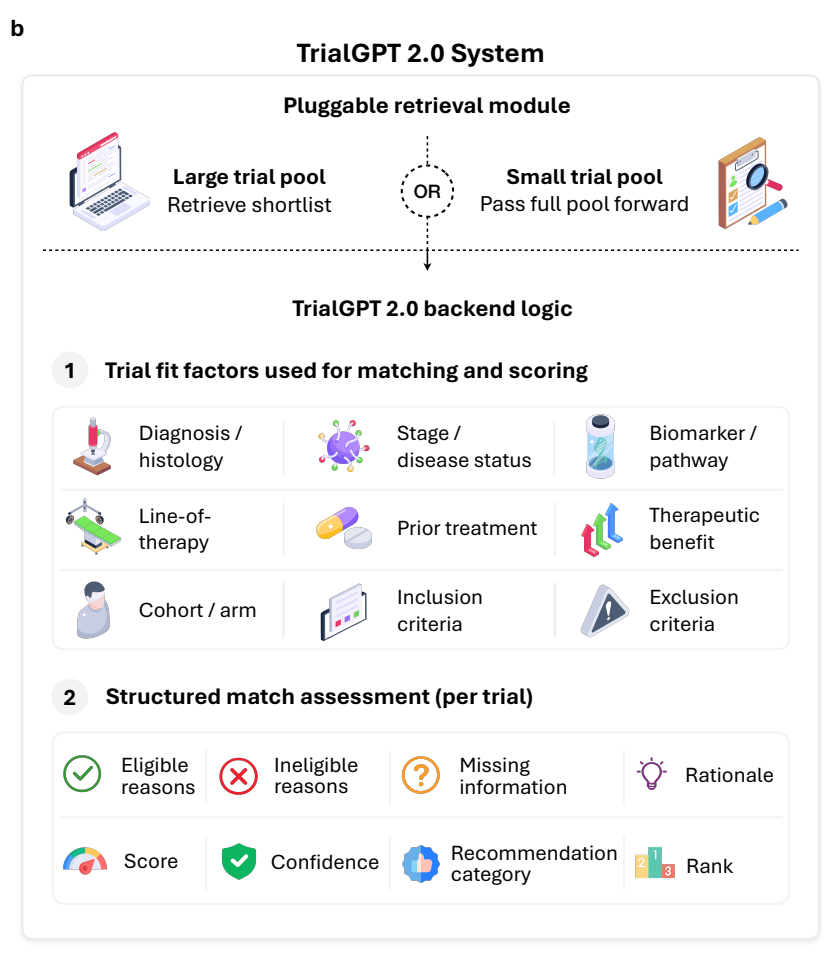

AI for Evidence Generation · TrialGPT 2.0
Towards AI-Assisted Clinical Trial Matching: Practical Considerations, Multicenter Evaluation, and Real-World Deployment
Yin Fang, Qiao Jin, Shubo Tian, Lauren He, Maya Geer, Noor Naffakh, Ryan Huu-Tuan Nguyen, Zifeng Wang, Jimeng Sun, Charalampos S. Floudas, James L. Gulley, Kamilia Moalem, Catarina Martins Maia, Amanda Nottke, Juan W. Valle, Melinda Bachini, Lourdes Rocha-Nussbaum, Kari Ramage, Nikita Curry, Megan Barnes, Mandy Mansaray, Darlene Gabeau, Craig E. Grossman, Heath Skinner, Michael Burczynski, NIH-TrialBench Consortium, Zhiyong Lu
arXiv preprint September 2026
These slides were generated with the help of AI and may contain errors.
01Motivation
Clinical trial recommendations require more than eligibility
- Our TrialGPT framework evaluates eligibility and ranks candidate trials.
- TrialGPT 2.0 also evaluates treatment fit, clinical priorities, and missing patient information.
- Clinicians review the explanations and select trials for further consideration.
02Method
TrialGPT 2.0 evaluates trial fit with local clinical priorities
- Inputs include patient context, a local trial corpus, and a clinician-defined matching policy.
- GPT-4.1 generates structured trial-level assessments; retrieval shortlists large trial pools.

03Method
TrialGPT 2.0 separates patient-trial fit from missing information
- Explicit eligibility conflicts lower the fit score; missing information lowers confidence.
- The explanation separates eligible reasons, ineligible reasons, missing information, and rationale.
| Output | Interpretation |
|---|---|
| Fit score | Patient-trial alignment, scored from 0 to 100. |
| Confidence | Reliability of the assessment given available information. |
| Recommendation | Highly Recommended, Possible Match, or Low Fit. |
| Rank | Fit score first, with confidence used to resolve ties. |
Local matching policies guide prioritization without overriding explicit eligibility criteria. Source: Methods, p. 16.
04Evaluation
Clinical evaluation includes five retrospective workflows
- The retrospective evaluation includes 288 cases and 1,340 reviewed patient-trial pairs.
- Four cohorts evaluate top-ranked recommendations; NCI evaluates all 9 trials for each case.
| Cohort | Cases | Clinical workflow |
|---|---|---|
| NIH Office of Patient Recruitment | 19 | Call intake and broad trial discovery |
| Cholangiocarcinoma Foundation | 10 | Disease-specific trial navigation |
| University of Illinois Cancer Center | 15 | Precision oncology tumor-board referral |
| UPMC Hillman Cancer Center | 144 | Radiation-oncology consultation |
| National Cancer Institute | 100 | Oncology referral and exhaustive trial review |
Top-ranked review: 188 cases and 440 pairs. NCI exhaustive review: 100 cases and 900 pairs. Source: Figs. 2a and 3, pp. 5–8.
05Result
TrialGPT 2.0 identifies a recommended trial for 91% of cases
- Clinicians evaluate up to 10 Highly Recommended trials for each of 188 cases in four cohorts.
- Hit rate measures cases with at least one clinician-recommended trial in the evaluated list.
| Evaluated list | Hit rate | Recommended precision | Eligible precision |
|---|---|---|---|
| Top 1 | 88% | 88% | 89% |
| Top 10 | 91% | 83% | 87% |
Eligible precision counts Recommended and Eligible but Not Recommended labels. These metrics evaluate top-ranked outputs, not recall of all suitable trials. Source: Fig. 3b and Results, pp. 7–8.
06Result
TrialGPT 2.0 reduces clinician screening time by 55.0%
- Two clinicians review 100 NCI cases in a counterbalanced experiment.
- Mean trial-level decision time per case decreases from 129.8 to 58.4 seconds.
129.8 s
Without assistanceseconds per case
58.4 s
With TrialGPT 2.0seconds per case
Time is summed over 9 trials per case and excludes patient-context review and automated report generation. Source: Fig. 3d and Results, pp. 8–9.
07Result
TrialGPT 2.0 adds trial recommendations for 10 additional cases
- The prospective tumor-board evaluation includes 27 cases reviewed from February to July 2026.
- Cases with a clinician-selected trial recommendation increase from 11 to 21 (90.9%).
11
Routine workflowof 27 cases
21
Routine workflow + TrialGPT 2.0of 27 cases
TrialGPT 2.0 uniquely identifies 37 of 54 final recommendations. This evaluation measures clinician-selected recommendations, not trial enrollment. Source: Fig. 4a–b and Results, pp. 9–10.
08Result
TrialGPT 2.0 improves target-trial recovery on NIH-TrialBench
- NIH-TrialBench contains 126 clinician-authored synthetic vignettes from 11 NIH Institutes and Centers.
- Target-trial Recall@10 measures recovery of the intended trial within the 10 highest-ranked results.
| Method | Target-trial Recall@10 |
|---|---|
| Gemini-3.5 Flash Extended Thinking | 21% |
| ChatGPT-5.5 Thinking | 43% |
| TrialGPT 1.0 | 54% |
| TrialGPT 2.0 | 70% |
Macro-average over the 11 contributing Institutes and Centers, using 1,373 candidate trials. Source: Fig. 5c and Results, pp. 11–12.
09Limitations
Clinical benefit requires evaluation beyond trial recommendations
- The study evaluates recommendations, agreement, and screening time; enrollment and patient outcomes are not measured.
- The prospective analysis includes 27 cases in one precision oncology tumor board.
- Clinical evaluation primarily concerns U.S. oncology workflows, and some recommendations miss specialist interpretations.
Source: Discussion, pp. 14–15.
10Summary
TrialGPT 2.0 supports clinical trial recommendation workflows
| Background | Clinical teams need suitable trial options for individual patients. |
| Problem | Eligibility alone does not determine clinical priority. |
| Approach | Local matching policies guide explained trial recommendations. |
| Results | 55.0% less screening time; 10 additional cases receive final recommendations. |
| Conclusion | TrialGPT 2.0 assists clinician review; enrollment benefit remains unmeasured. |